TL;DR
A world action model fixes its driving objectives when training ends. GuidedWAM adds new objectives to a frozen model at sampling time: each objective is a differentiable energy on the sampler's clean estimate of the plan, and its gradient is added to the model's velocity at every denoising step. No retraining and no backpropagation through the network. On the NAVSIM v2 hard split it improves three released models by 2.2 to 3.8 EPDMS at under 10% extra sampling time per step.
Abstract
World action models (WAMs) for autonomous driving couple the driving policy and the visual world model in a single generative network whose objectives are fixed post-training. Conditioning on a new driving objective requires retraining. We study energy guidance as a general mechanism and present GuidedWAM, a model-agnostic framework for injecting driving objectives into frozen WAMs at sampling time. Our framework constructs each objective as differentiable energies on the sampler's intermediate clean-action estimate, which needs only forward access to the frozen model. On the NAVSIM v2 hard-split, guidance improves all three frozen, publicly released WAMs by 2.2 to 3.8 EPDMS, averaged over three sampler seeds, and adds less than 10% to the sampling time per step. These results position energy guidance as a practical post-training control channel for WAMs.
Method

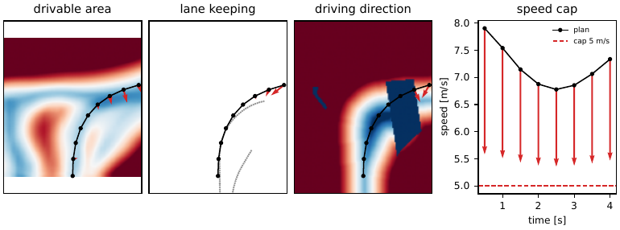
- Energies on the clean estimate. A driving objective is a differentiable function of the planned trajectory, for example the distance of the vehicle footprint to the road edge.
- Jacobian-free. The network Jacobian is dropped, so guidance needs only forward access to the released checkpoint.
- Scheduled over the noise level. A trapezoidal window applies the correction once the clean estimate is informative and stops before the last steps, which are left to the frozen model.
Primary results
NAVSIM v2 hard split, three frozen and publicly released world action models. Guidance uses one camera-only drivable-area energy and no privileged information at inference.
29.8 → 33.6
35.5 → 37.8
37.3 → 39.6
| Model | Stock | + Energy guidance | Gain | DAC | Comfort (EC) |
|---|---|---|---|---|---|
| DriveLaW | 29.8 ± 0.3 | 33.6 ± 0.4 | +3.8 | 67.2 → 71.5 | 57.1 → 57.8 |
| DriveWAM | 35.5 ± 0.7 | 37.8 ± 0.8 | +2.3 | 76.0 → 77.6 | 72.7 → 71.4 |
| SimWAM | 37.3 ± 0.6 | 39.6 ± 0.5 | +2.2 | 78.6 → 79.8 | 72.1 → 70.4 |
EPDMS in points, mean and standard deviation over three sampler seeds for both the stock and the guided sampler. DAC is the drivable-area compliance and EC the two-frame comfort, both on the synthetic scenes. Gains are computed before rounding.
Guidance against post-hoc projection
A projection of the finished plan onto the same constraint scores higher, but it bends the plan abruptly at the point of violation. Guidance spreads the correction over the whole plan and keeps the two-frame comfort close to the stock model.
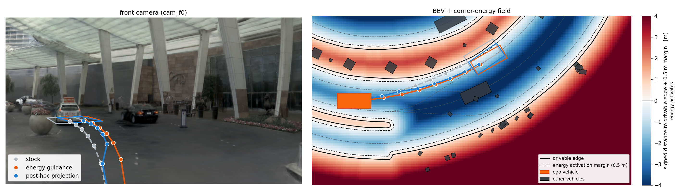
| Model | Method | EPDMS ↑ | Off-road ↓ | Comfort (EC) ↑ |
|---|---|---|---|---|
| DriveLaW | stock | 30.0 | 26.0 | 57.9 |
| guidance | 34.8 | 22.7 | 58.0 | |
| projection | 37.7 | 16.6 | 51.2 | |
| DriveWAM | stock | 35.9 | 20.9 | 73.0 |
| guidance | 39.2 | 18.5 | 71.4 | |
| projection | 40.3 | 15.2 | 66.0 | |
| SimWAM | stock | 37.8 | 18.7 | 72.8 |
| guidance | 39.2 | 18.0 | 71.6 | |
| projection | 41.0 | 14.0 | 65.3 |
Both methods use the map-based drivable area with a margin of 0.5 m, one seed. Off-road is the share of synthetic scenes that fail the drivable-area compliance, in percent. EC is the two-frame comfort on the synthetic scenes.
Ablations
Guidance strength
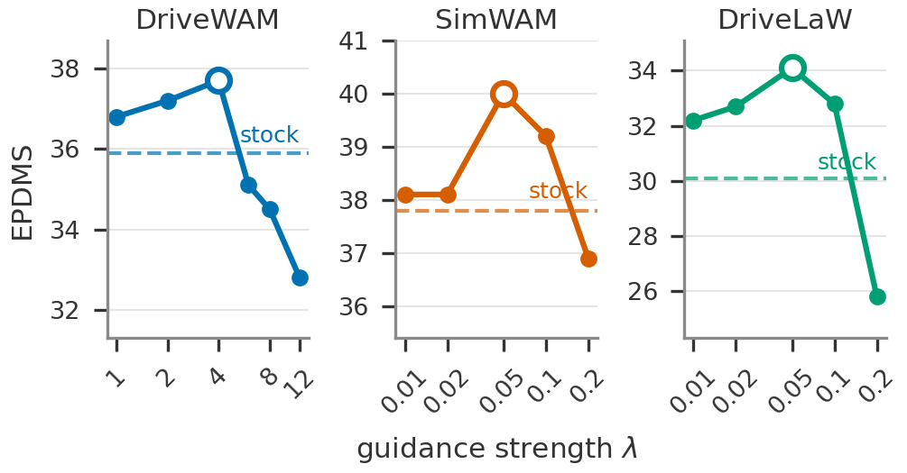
Guidance window over the noise level
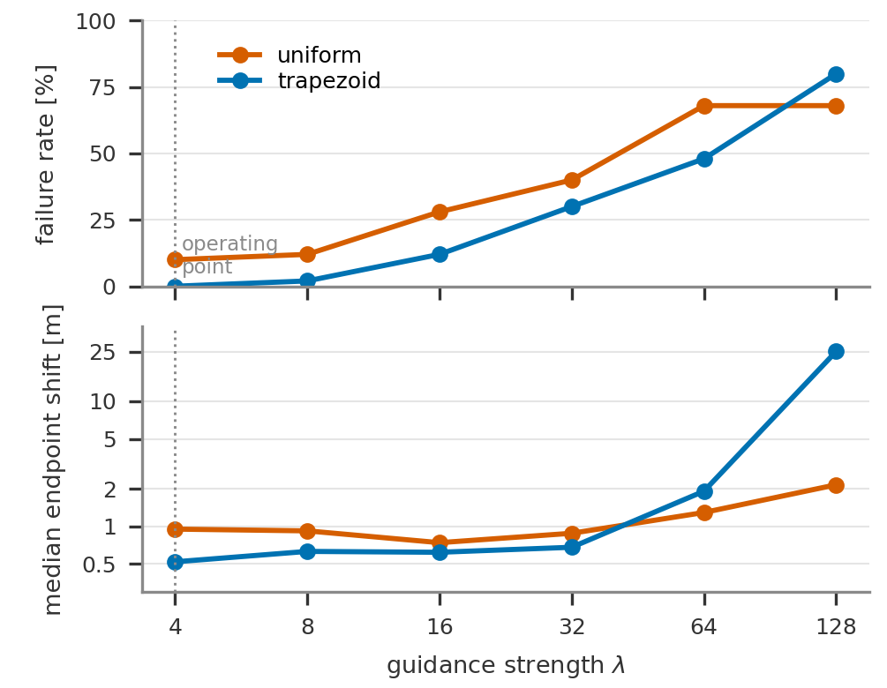
Composition of energies
| Model | Stock | LK | DA | DD | LK+DA | DA+DD | LK+DA+DD |
|---|---|---|---|---|---|---|---|
| DriveLaW | 30.0 | 31.1 | 34.0 | 30.6 | 33.3 | 34.8 | 33.0 |
| DriveWAM | 35.9 | 37.5 | 39.2 | 36.4 | 39.5 | 40.0 | 39.6 |
| SimWAM | 37.8 | 37.9 | 39.2 | 37.8 | 38.2 | 39.6 | 38.9 |
EPDMS with energies built from privileged map information: lane keeping (LK), drivable area (DA) and driving direction (DD). Drivable area with driving direction scores best on all three models. Adding lane keeping does not help, since it acts on every scene.
Cost of guidance
One NVIDIA RTX 4090. Forward passes take 16 to 48 ms per step depending on the model. At the same strength the exact gradient scores lower on all three models: 29.9 against 34.1 on DriveLaW, 36.3 against 37.7 on DriveWAM and 37.9 against 40.0 on SimWAM.
Speed cap as a new objective
A speed cap is a single number given at inference and needs no map or perception input. Guidance removes most plans that exceed the cap on all three models. Ego progress and comfort fall with it, since the benchmark rewards progress and the plan has to decelerate. Together with the camera-only drivable-area energy (DA), the gain in drivable-area compliance is kept.
| Model | Arm | Above cap ↓ | EP ↑ | DAC ↑ | EPDMS ↑ |
|---|---|---|---|---|---|
| DriveWAM | stock | 49.2 | 87.0 | 76.4 | 35.9 |
| speed cap | 0.2 | 73.8 | 80.8 | 32.1 | |
| speed cap + DA | 0.5 | 73.8 | 83.8 | 35.5 | |
| SimWAM | stock | 47.2 | 86.2 | 78.5 | 37.8 |
| speed cap | 9.9 | 76.8 | 84.0 | 33.7 | |
| speed cap + DA | 11.0 | 76.9 | 84.2 | 34.8 | |
| DriveLaW | stock | 47.3 | 84.7 | 67.4 | 30.0 |
| speed cap | 2.1 | 74.2 | 75.3 | 28.3 | |
| speed cap + DA | 6.5 | 74.4 | 78.5 | 30.6 |
Cap of 5 m/s, full hard split, one seed. "Above cap" is the share of plans with a waypoint speed above the cap, in percent. EP is the ego progress and DAC the drivable-area compliance on the synthetic scenes. With a cap of 7.5 m/s the share falls from about 22% to at most 2% on all three models.
Projection with a smoothness term
Does guidance keep more comfort only because the projector has no smoothness term? Adding one to the projector recovers a third to a half of the comfort gap and does not reach the comfort of the guided plans at any weight.
| Comfort (EC) ↑ | Stock | Guidance | Projection | + smooth 0.1 | + smooth 1 | + smooth 10 |
|---|---|---|---|---|---|---|
| DriveLaW | 57.9 | 58.0 | 51.2 | 52.0 | 54.4 | 54.0 |
| DriveWAM | 73.0 | 71.4 | 66.0 | 66.1 | 66.9 | 66.9 |
| SimWAM | 72.8 | 71.6 | 65.3 | 65.8 | 67.0 | 67.5 |
Two-frame comfort on the synthetic scenes, map-based drivable area, one seed. Bold marks the best value among guidance and the projection variants. The projection keeps its higher EPDMS at every weight.
Stabilization components
| DriveWAM, full hard split | EPDMS ↑ |
|---|---|
| stock | 35.9 |
| guidance with the trapezoidal window | 37.7 |
| uniform window instead | 31.2 |
| per-energy gradient normalization instead of fixed weights | 37.7 |
One seed. The window carries the stability: a uniform weight falls below the stock model. The velocity bound is not active at any strength of the strength study and only acts as a safeguard far above the operating point.
Errors of the road-edge field
Shifting the predicted road edge by up to 1 m inward or outward, or adding noise of up to 0.5 m, keeps SimWAM between 39.3 and 39.8 EPDMS, against 40.0 with the unperturbed field and 37.8 without guidance.
Qualitative results
Seven scenes of the NAVSIM v2 hard split on which the stock DriveWAM plan leaves the drivable area, and both guidance and the post-hoc projection recover it. Left: front camera with the stock (grey), guided (orange) and projected (blue) plans. Right: bird's-eye view with the drivable-area energy field. The projection tends to change the plan at the waypoint of the violation, and guidance shifts the whole plan.
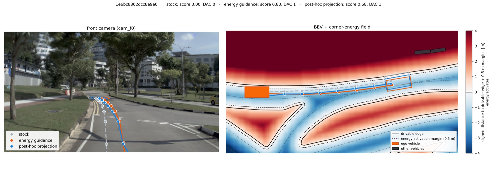
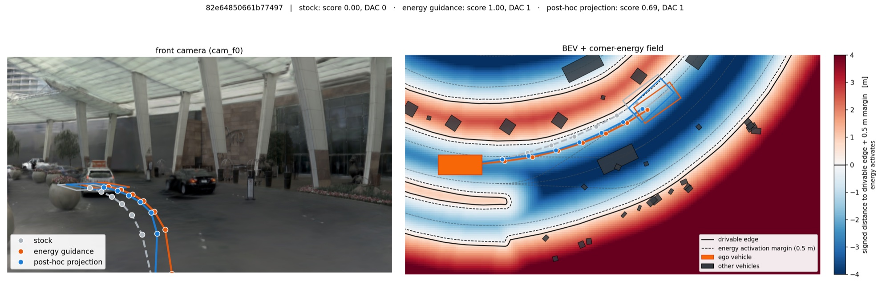
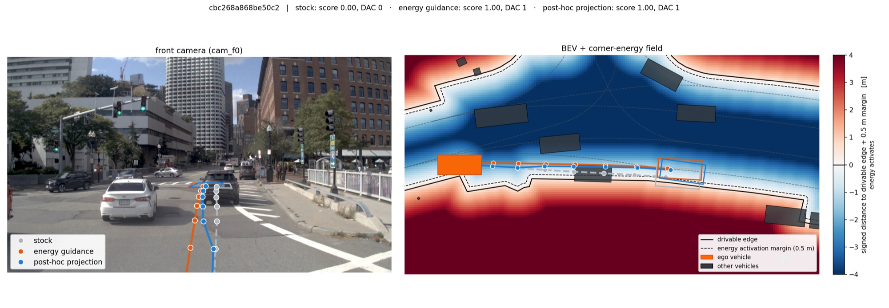
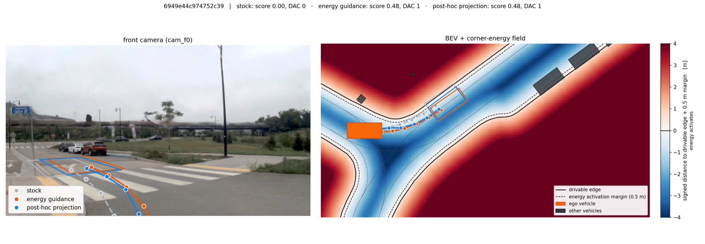
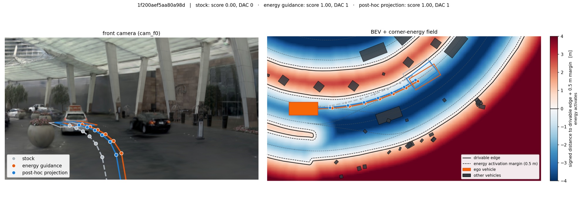
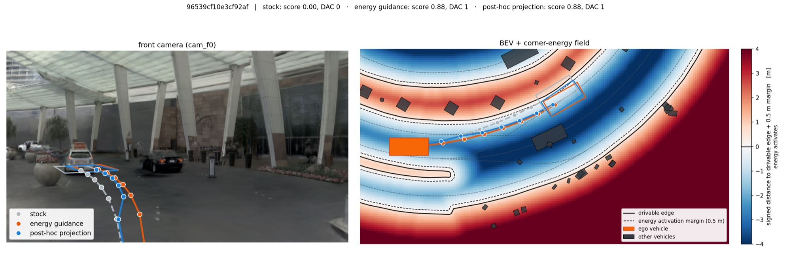
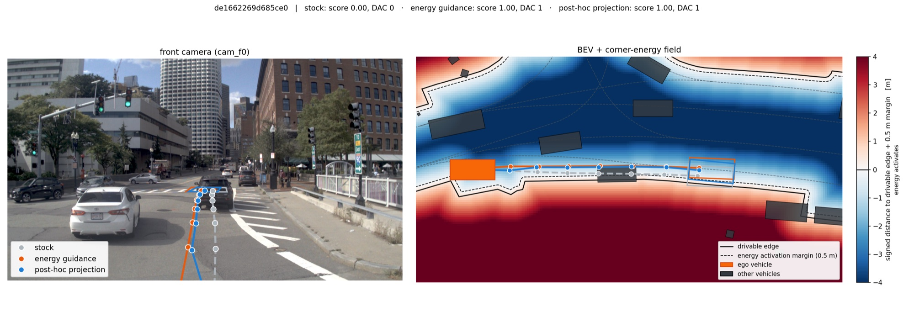
The scenes are selected from the 109 scenes with this outcome, and several are synthetic variants of the same real scene. Both methods use the map-based drivable area with a margin of 0.5 m. The header of each panel gives the score and the drivable-area compliance (DAC) of the three plans on that scene.
BibTeX
@inproceedings{su2027guidedwam,
title = {GuidedWAM: Training-Free Energy Guidance for World Action
Models in Autonomous Driving},
author = {Su, Xiyan and Sch{\"a}fer, Finn Rasmus and Lim, Hojun and
Diermeyer, Frank and Betz, Johannes and Lienkamp, Markus},
booktitle = {IEEE/CVF Winter Conference on Applications of Computer
Vision Workshops (WACVW)},
year = {2027},
note = {arXiv:2611.07912}
}